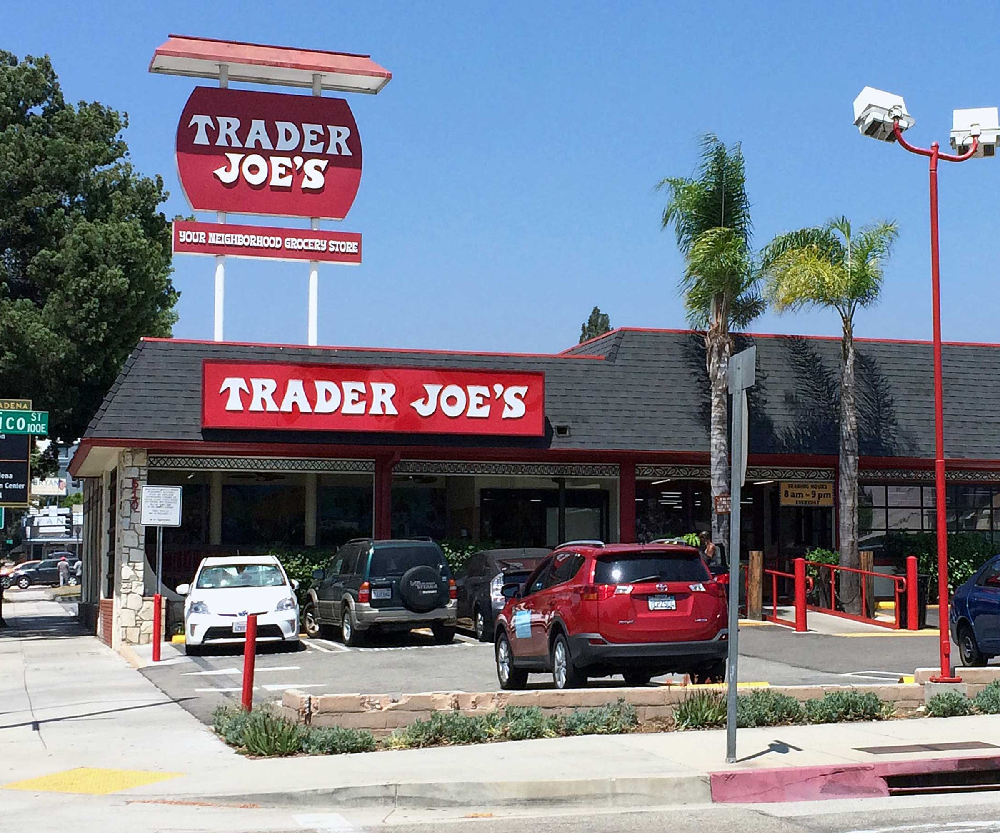
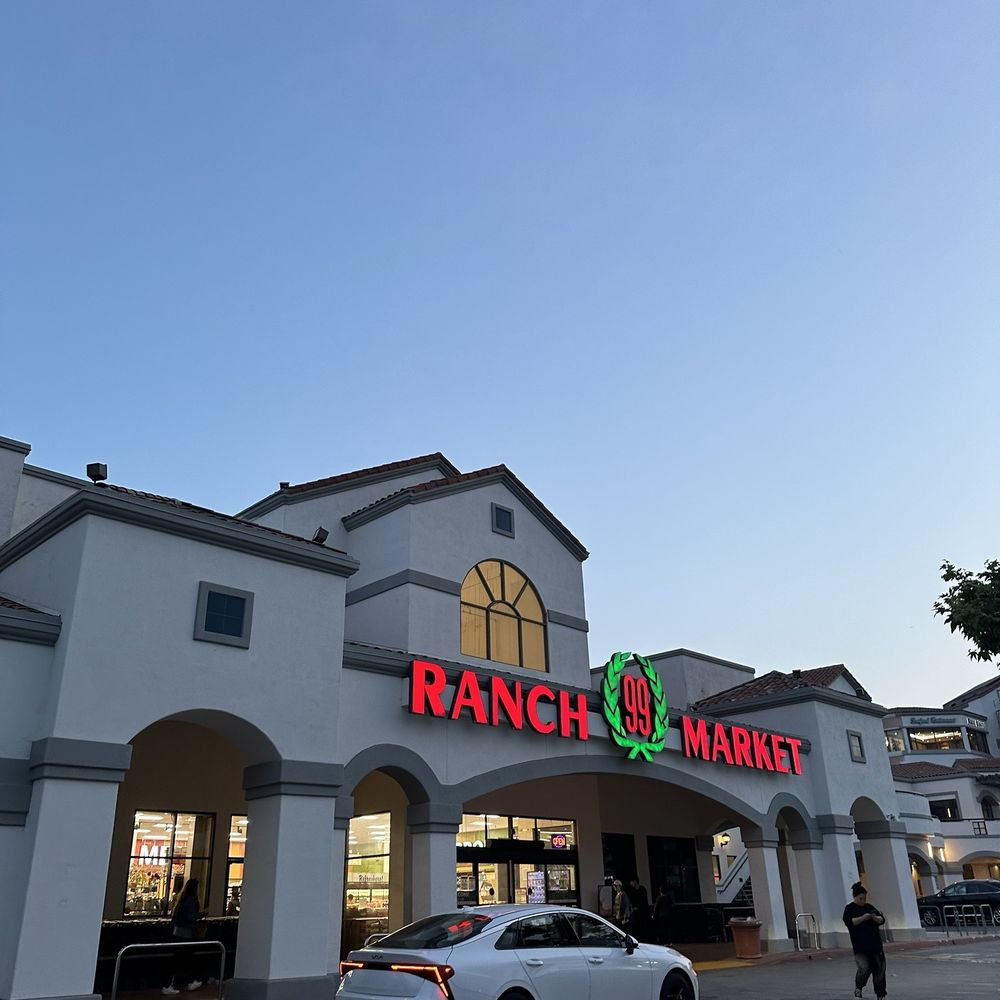
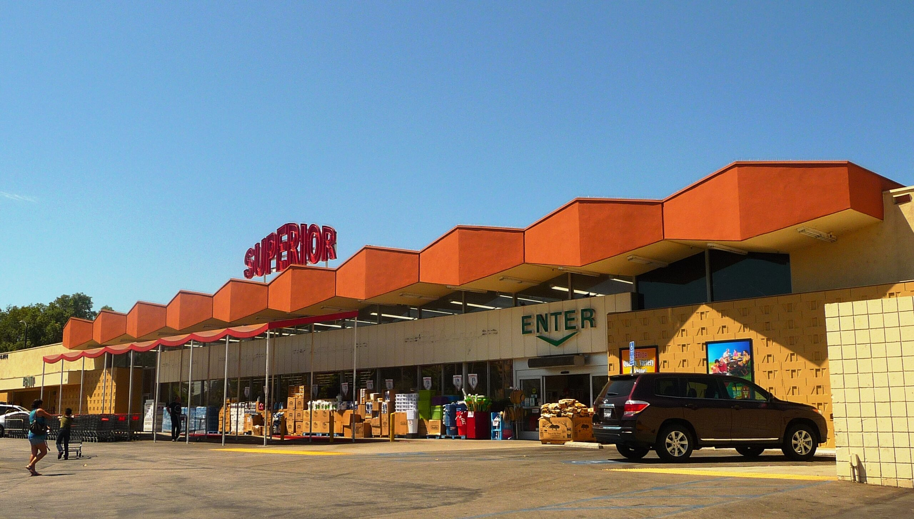
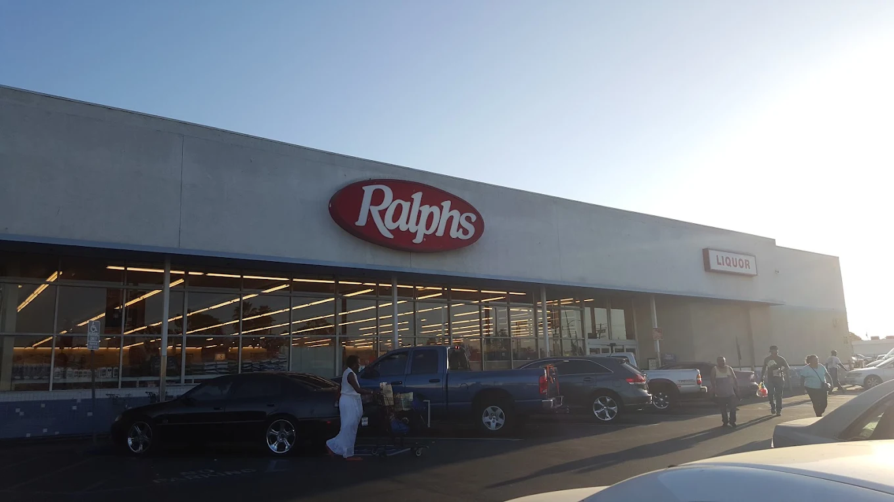
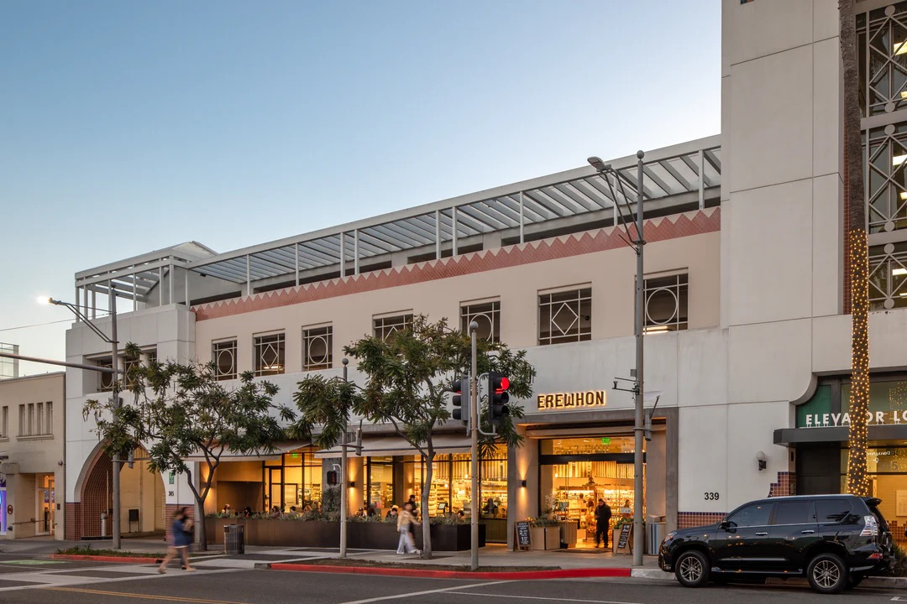

This interactive spatial narrative maps the economic landscape of Los Angeles County through the lens of food accessibility and distance. By tracking grocery store placement across vastly differing cities within Los Angeles and taking into account Area Median Income (AMI) the difference in food access between affluent neighborhoods and working class neighborhoods reinforces the stark regional wealth gap.
Median Household Income: $131,630 | AMI Tier: Above Moderate Income | Population: 138,699
Despite Pasadena’s massive generational affluence, historical redlining and freeway construction systematically isolated its Black and Latino populations into under-resourced pockets. This spatial segregation created a stark internal wealth divide where high-end commercial infrastructure directly contrasts with historically marginalized neighborhoods.

Photo: Refinery29
Opened in Pasadena in 1967 as the original location, Trader Joe's uses direct-to-manufacturer private labeling to offer premium and organic goods at highly competitive, accessible prices. However, while its pricing structure is affordable, corporate site selection selectively targets high-income, gentrified zip codes, geographically insulating its stores from lower-income communities.
Median Household Income: $77,605 | AMI Tier: Low Income | Population: 61,096
In the late 20th century, affluent Asian immigrants chose to bypass traditional, low-income urban enclaves like Chinatown to establish the nation's Little Taipei refering to the thriving Taiwanese and Taiwanese American communities. This concentrated influx of immigrant middle-class capital created a unique localized economy that anchored wealth retention against broader systemic disparities.

Photo: Yelp
Originally named "99 Price Market," the number nine is considered lucky in Chinese culture and a homophone for longevity and "Ranch" was later added to the name to emphasize freshness. 99 Ranch relies on direct overseas supply chains and specialized regional distribution to keep authentic Asian staples, specialty produce, and proteins highly affordable for middle and working-class families.
Median Household Income: $56,615 | AMI Tier: Extremely Low / Very Low Income | Population: 22,722
The collapse of manufacturing in the late 20th century triggered white flight and left Cudahy with an economically vulnerable, working-class Latino population lacking generational wealth. Because its tiny 1-square-mile footprint lacks a lucrative commercial tax base, the city suffers from institutional underfunding that leaves residents reliant on high-volume discount grocers.

Photo: Los Angeles Conservancy
Superior Grocer targets low-income neighborhoods by operating a high-volume, low-margin budget format that prioritizes deeply discounted bulk goods and low-cost staples. While this pricing provides an essential economic safety net for underserved areas, the lack of premium or organic selections highlights a stark gap in health-focused food equity.
Median Household Income: $57,622 | AMI Tier: Low / Very Low Income | Population: 279,729
Decades of institutional discrimination and corporate flight culminated in systemic food apartheid, which worsened drastically after major supermarkets abandoned the region following the 1992 civil unrest. While city rebranding initiatives sought to attract new capital, residents continue to face an ongoing racial wealth gap and disproportionately high housing cost burdens.

Photo: Yelp
Founded in 1873 by George A. Ralphs, Ralphs is Southern California’s oldest operating grocery chain. Originally established in downtown Los Angeles, the brand brought innovation to the grocery store like self-service shopping, in-house bakeries, and laser scanning. As a conventional unionized supermarket, Ralphs utilizes standard corporate pricing paired with a "rewards card" system, serving as a baseline for standard regional living costs. In lower-income areas, however, the lack of localized competition often creates higher average grocery bills for residents compared to suburban locations with more store options.
Median Household Income: $132,977 | AMI Tier: Above Moderate Income | Population: 68,319 (Combined)
Historically protected by exclusionary zoning and predatory lending that barred lower-income families, these Westside cities represent an extreme hyper-concentration of capital. The presence of ultra-luxury retail ecosystems like Erewhon serves as a highly visible monument to the massive economic chasm separating these hillside communities from working-class neighborhoods nearby.

Photo: Erewhon
Erewhon utilizes an aggressive, hyper-luxury pricing strategy driven by ultra-exclusive organic sourcing, specialized wellness items, and highly sought out branded products and foods. By intentionally scaling its pricing out of reach for average consumers, the store functions as a form of elite economic curation designed strictly for the ultra-wealthy.